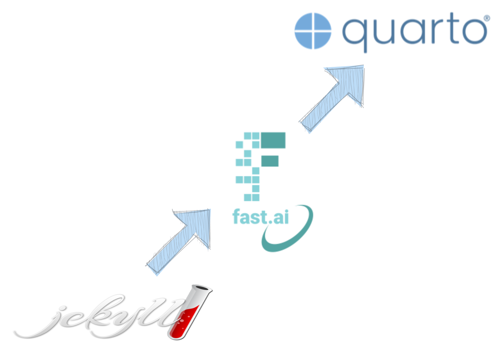

Migrating from Fastpages to Quarto

Many years ago, I created my first blog using Jekyll. But since I’m not an avid web developer, if I took a long break from blogging, I’d have to re-learn how to build and customize the site. Additionally, as a data scientist I needed a way to showcase my work and Jekyll didn’t have a way to easily turn Jupyter notebooks into blog posts.
Then while taking the online course Practical Deep Learning for Coders, I learned about Fastpages. Its main selling point was to easily create and publish Jupyter notebooks as blog posts. As many data scientists or machine learning engineers, Fastpages turned into my go-to tool for my personal site and blog. But recently, a new kid on the block has emerged - Quarto.
In this blog post, I’ll walk you through what I did to migrate from Fastpages to Quarto. I’ll cover the benefits of using Quarto, the steps you need to take to migrate your content, and some useful tips to help you get started.
Why Migrate from Fastpages to Quarto?
Well, the number one reasons is that Fastpages is now deprecated and the authors recommend to migrate to Quarto. Fastpages was a great way to turn Jupyter notebooks into blog posts quickly. However, the limitations of the tool became apparent over time. Fastpages are not as customizable as one might like, and the formatting of blog posts is not very flexible. It was built on Jekyll and so, while you can add lots of functionality, you’d probably need to learn more Jekyll than most people would like and understand how that code interacts with Fastpages.
Quarto, on the other hand, is a modern document publishing system that is designed to be flexible, powerful, and easy to use. With Quarto, you have more control over the formatting of your blog posts, and you can customize the look and feel of your blog to match your personal style. Additionally, Quarto supports multiple output formats, so you can publish your content to HTML, PDF, or other formats.
If you are familiar with Rmarkdown documents, Quarto is the spiritual successor to Rmarkdown with a number of excellent features. My favorite is being able to run code inline using Python, R, Observable JS, or Julia.
Steps to Migrate from Fastpages to Quarto
I followed the post by nbdev.fast.ai to get started. My instructions below differ a bit for various reasons I explain.
Instructions:
Install Quarto
Create a new repo or directory to migrate your blog to
In this new repo, create a quarto blog and install required extensions with the following terminal commands. This will create a minimal project structure for you:
quarto create-project --type website:blog .You do not need to run quarto install extension quarto-ext/video since the extension is now part of the base Quarto as of 1.2. I submitted an issue for this, so it might be corrected.
Your new repo will have a
posts/directory. This is where you will copy all of your notebook and markdown posts from Fastpages. You can use the code provided by the nbdev.fast.ai post but I found it just as easy to manually copy the_notebooksand_postscontent to the new blog.Now you need to copy any images from the old blog to the new blog. This was the least manual and most annoying part form me. I used the code they provided, but it didn’t turn out quite the way I hoped. Many links were still broken after the step 6 merger.
cp ../blog/images/* posts
cp -r ../blog/images/copied_from_nb/* posts/- Make your posts Quarto compatible with the following command:
nbdev_migrate --path postsnbdev_migrate do?
nbdev_migrate does the following things:
For notebooks - Migrates markdown front matter to raw cell front matter as described here. - nbdev v1 directives are automatically converted to Quarto directives. Note that we convert everything to Quarto directives (nbdev-specific directives are not relevant for this context) - Markdown shortcut for embedding youtube videos and callouts are automatically converted to work with Quarto.
For markdown and notebooks - Automatically creates link aliases so that old links will not break. Jekyll automatically generates URLs differently than Quarto, so this ensures that the Jekyll way is aliased. - Automatically corrects image paths - Makes front matter compatible with Quarto by changing field names and values where necessary
- After running the migration code, I found many references to images were broken. But I needed to clean up the file structure anyway. I put every post into it’s own named folder and renamed the content files to
index.qmd. This is different than the Fastpages naming convention and structure. Personally, I like the Quarto setup better since the assets and next to the content and don’t require complicated path references anymore. After you get the file structure the way you like it, you’ll need to make sure the links work correctly. An easy way to check is by serving the site to your localhost by using the commandquarto preview. Check each page and fix any broken links you find. Here is the example file structure from the nbdev.fast.ai post:
nbs/blog
├── index.qmd
└── posts
├── 2022-07-28-nbdev2
│ ├── cover.png
│ ├── index.qmd
│ ├── ...
└── 2022-08-25-jupyter-git
├── friendly-conflict.png
├── index.qmd
└── ...
...At this point the migration is basically complete. They also recommend updating the following files:
./.gitignore: we suggest adding_site/as well as dot files.*./about.qmd: Add some information about yourself../profile.jpg: optionally change the profile picture../_quarto.yml: update the social media links
If you have index files with different extensions you can edit the list generator in your home page (./index.qmd) like this:
---
title: "Listing Example"
listing:
contents:
- "reports/*.qmd"
- "reports/*.md"
- "lab-notes/*reports.ipynb"I’ve noticed that if you use the wildcard (*) for file extensions, then it causes issues when populating the lists. Specifically, in my case it counted draft posts and put them in blank cells within the list. It’s a good thing it is easy to specify different extension types as shown above.
Once you get the website the way you like, you can publish your site by following the Publishing Basics guide. I use GitHub Pages so I used that option with the quarto publish command for publishing.
Continue reading my journey of migrating to Quarto in my second post, Customizing Your Quarto Website, where I talk about improvements and customizations I have used to improve the website.